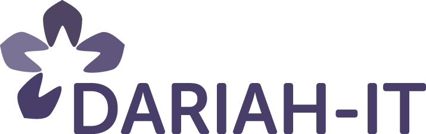

The Workshop on Big Humanities will be held in conjunction with the 2013 IEEE International Conference on Big Data (IEEE BigData 2013), which will take place between 6-9 October 2013 in Silicon Valley, California, USA, and which provides a leading international forum for disseminating the latest research in the growing field of “big data”.
The workshop will address applications of “big data” in the humanities, arts and culture, and the challenges and possibilities that such increased scale brings for scholarship in these areas.
The use of computational methods in the humanities is growing rapidly, with the increasing quantities of born-digital primary sources (such as emails, social media) and the large-scale digitisation programmes applied to libraries and archives. This has resulted in a range of interesting applications and case studies, and at the same time highlights the interpretative issues raised by applying such “hard” methods for answering subjective questions in the humanities.
Moreover, the questions and concerns raised by the humanities themselves have consequences for the interpretation in general of “big data” and the uses to which it is put, and the challenges of producing quality – meaning, knowledge and value – from quantity. The workshop will thus also address complementary research that uses the humanities and its methods to provide a critical appraisal of “big data” in other areas, both inside and outside academia.
Research topics covered:
Topics covered by the workshop include, but are not restricted to, the following:
- Text- and data-mining of historical and archival material.
- Social media analysis, including sentiment analysis
- Cultural analytics
- Crowd-sourcing and big data
- Cyber-infrastructures for the humanities
- Relationship between ‘small data’ and big data
- NoSQL databases and their application, e.g. document and graph databases
- Big data and the construction of memory and identity
- Big data and archival practice
- Construction of big data
- Big data in Heritage
- Presentation of digital heritage tools and infrastructures (database, knowledge representation, analysis).
- GIS, 3D graphic reconstruction, high end imaging.
- Ontology related to archives and database storage for material and visual culture, etc. and how best to share data and tools across European countries and partners.
- Database and infrastructure support for fieldwork (cf. issues of data collecting and representation, excavation and survey data management, recording "information at the trowel's edge" to coin Ian Hodder, how to best process survey and long series datasets etc.).
- Discussion on further collaboration and how to influence EU policy in digital heritage-cultural heritage matters.
- Project presentation 20 minutes.
- Demonstration 20 minutes of tool or method or project.
- Paper presentation 20 minutes presentation. Final papers may be published in a journal (to be advised).
- Panel 40-60 minutes involving 3-5 speakers.Read more...
CFP: Cultural Heritage, Creative Tools and Archives Workshop

 DIGHUMLAB DK and the DIGITAL CURATION UNIT Athens are pleased to invite you to submit to a DARIAH associated 2 day workshop on CULTURAL HERITAGE, CREATIVE TOOLS AND ARCHIVES.
DIGHUMLAB DK and the DIGITAL CURATION UNIT Athens are pleased to invite you to submit to a DARIAH associated 2 day workshop on CULTURAL HERITAGE, CREATIVE TOOLS AND ARCHIVES.
The workshop is open to all but we in particular invite participants drawn in the first instance from the DARIAH, ARIADNE, CENDARI and NeDiMAH and other EU cultural heritage networks. We envisage it will foster the growth of a community of practice in the field of digital heritage and digital humanities, leading to closer cooperation between participants and helping attendees develop tools and methods that can be used by the wider community.
Central topics:
Hack4LT, 4 - 5 April 2013, Vilnius, Lithuania
 Hack4LT: The first cultural heritage and digital humanities orientated hackathon in Lithuania will take place on 04 - 05 April 2013 in Vilnius, Lithuania
Hack4LT: The first cultural heritage and digital humanities orientated hackathon in Lithuania will take place on 04 - 05 April 2013 in Vilnius, Lithuania
Inspired by: EUROPEANA and DARIAH
Organisators: Vilnius University Faculty of Communication (VUFC) (http://www.kf.vu.lt/en) and Vilnius University Library (VUL) (http://www.mb.vu.lt/en/titulinis)
Partners: M. Mažvydas National Library of Lithuania (NLL) (http://www.lnb.lt/en/) and „Dizi“ (http://www.dizi.lt/heritage/index_en.php)
Sponsors: Vilnius University (VU) (http://www.vu.lt/en) and "Asseco Lietuva" (http://www.sintagma.lt/sintagma/selectLanguage.do?language=en).
Venue: National Open Access Scholarly Communication and Information Center (http://www.mkic.mb.vu.lt/en/), Address: Saulėtekio av. 5, Vilnius, Lithuania (https://foursquare.com/v/mkic--vilniaus-universiteto-biblioteka/5110af35e4b00d9b65a437c1
Description:
Hack4LT is a two-day event intended to stimulate the collaboration between Humanities' scholars and software developers. Its aim is targeted towards the technology driven experimentation with an existing EUROPEANA data sets connecting various kinds of digitized cultural heritage resources from the European museums, libraries, archives, etc. Free access to these resources stimulates a broad public interest in the European culture and challenges cultural institutions to seek new ways of engaging people, as well as to develops tools in this space. Furthermore, because of the richness of EUROPEANA collection and the nature of a preserved digital content it is considered to be a valuable data source for the researchers of the Digital Humanities and enhances digitally-enabled research in this area.
Italy signed Memorandum of Understanding
We are delighted to announce that Italy has signed the Memorandum of Understanding (MoU) formally expressing their interest in participating in DARIAH.
DARIAH-IT activities will be coordinated by the the National Research Council.
Bamboo DiRT and DH Commons looking for DARIAH representatives
 Bamboo DiRT and DH Commons are looking for DARIAH representatives.
Bamboo DiRT and DH Commons are looking for DARIAH representatives.
1. A DARIAH representative on the board of Bamboo DiRT
Quinn Dombroski from Bamboo DiRT would be happy to add contents from DARIAH directory of tools (including DARIAH seal), and to welcome a DARIAH member in her editorial board.
2. A DARIAH representative as co-editor for DHCommons
The role of the co-editor coming from a non US and preferably non English speaking country would be to work on a weekly basis on collecting reviews and suggesting new projects in the database. DHCommons is seeking a co-editor with a different speciality than co-editor Ryan Cordell who is active in the literature, geolocalisation in texts, social networks areas.
If you are interested, please contact Marin Dacos (marin.dacos at openedition.org) or Erik Champion (echa at adm.au.dk)